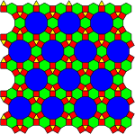
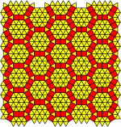
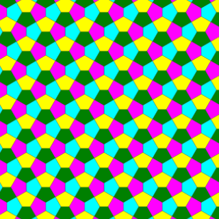
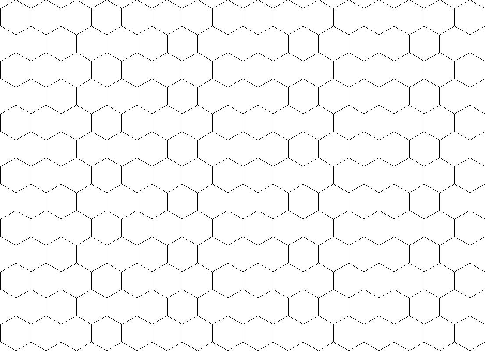
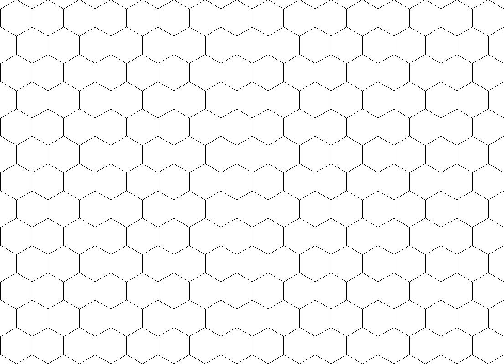
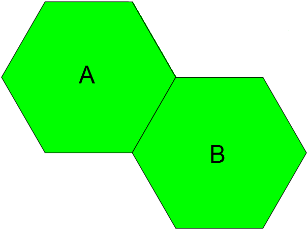
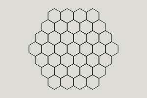

Rethinking grids in games
I've been going over turn based games in recent times. This got me thinking on how the turn-based strategy genre can be expanded on, and I realized that one thing that developers seem almost afraid to experiment with is the very grid they work on. Which if you think about it is kind of weird. The grid you play on implicitly determines a ton of mechanics and design decisions. As an example, imagine chess on a hex grid. The whole game plays out differently.
So I started looking at other types of ways you could lay out a board, and I came across the wikipedia entry on the topic. Just look at these kinds of boards and think of all the different mechanics you can play with in just a minute or two
  Glancing over these my mind is flooded with ideas and inspiration. The left one could be a city management game, with red acting as roads and blue as city centers, and green as resources. The middle could be a large scale war simulator, essentially being hexes with lots of units in each tile. The last one, a pentagonal tiling, looks especially nice. The possibilities are endless.
I questioned why more devs don't do that, because it's a way to instantly make your game stand out. Upon researching the issue I found next to no resources to help developers solve it. I had a hard time even finding articles and tools for hex grids that I found satisfactory. The best I could find was Redblobgames which has a great article breaking down hex grids, and while I very much love the site and recommend it to any aspiring game developer, the implementations were still ultimately too clunky. With so few good resources out there and most solutions resulting in spaghetti code, it's no wonder this stuff isn't commonplace. I want to fix that.
Let's start with something basic
To get an understanding of this new system it's best start with how we normally do grids. So you have your two standard grids: hex and square. Square grids are nice and clean, and hex grids allow for tiling in 3 directions instead of 2 while also freeing up the eccentricities around moving diagonally that squares face:
 

Pretty basic. So how do those work? At the end of the day you need a way to store your grid in a way that the computer can understand, display, and manipulate them, and preferably doesn't give you as a developer a massive headache. Square grids are dead simple. It's just an array with 2 dimensions. The size of the squares is also the distance you tile them from one another both horizontally and vertically, making scaling super easy. Pathfinding is also trivial because the grid is mapped directly to the array so moving vertically maps to one variable and horizontally to the other.
But when you move to hex grids, well things get a tad tricky but not impossible. You create your hexagon, and just doing that you're already bombarded with some basic trigonometry. If you want to create the hex you need to calculate the points from the center using a radius, the “outer radius”. But then there's a second value you need, the “inner radius”, which is the distance from the center to the middle of an edge, also derived using trig. To place hexes on one axis is trivial, just place the center of the new hex 2 times the value of the inner radius along either the horizontal or vertical axis. But then things get annoying. Hexs *can* naively be mapped to a 2d array/dictionary, but every other row will be offset by 60 degrees. Generally you have to write some hacky code to check if you're on a normal row or an offset row when placing the grid. And now you've got all these magic values most likely hardcoded into your scripts. This is gross, but this is pretty much how everyone does hex grids in some form or another, especially if they want it to conform to a square shape, which you will because that's how our computer monitors are laid out and it also plays nicely with those aforementioned 2d arrays. And then you move onto pathfinding. Each hex obviously connects up to six tiles. Well, now you have to also keep track of this offset stuff inside your own pathfinding code, and you have to keep track of the rules for moving in the 6 directions, only two of which are simply mapped along one axis. It gets ugly fast and yet that's the route I see people take over and over.
So when developers ask themselves if they want to try a different tile set and they start trying to tackle that problem, they get overwhelmed with all that trig stuff and hardcoded pathfinding and everything rapidly becomes a jumbled mess. My solution is to let me handle the boring trig for you, and then stick to the 2d arrays as much as possible. Abstract as much of those magic values and math to data that you calculate once, throw in a config file, and forget about ever having to worry about it again. That stuff shouldn't be in your code, and it sure as heck shouldn't be something you as a game dev should have to think about.
Let's use chunks instead!
So to that end, we can start by converting a hex grid into something not ridiculous. That wiki page already has a hint. Instead of using single hexes, why not use chunks of 2 hexes arranged like so?
Turns out if you do it like this you can paste this pattern to form a hex grid just as easily as you would a square grid, albeit the horizontal and vertical distances will of course be different. The magic numbers are still there mind you and you'll need to calculate them once, but now we don't have any weird rules like handling offsets every other row. You just define the x and y offsets of both hexes from the center of the chunk. Okay, that's kind of neat. Seems a bit complicated for a hex grid I mean we've been doing those since like the 90's. But this process makes handling the weirder tiling systems in such a way that doesn't involve all that annoyance because you can just define one chunk and treat it like a square grid that our simple monkey brains can easily intuit. Pathfinding is also nice because we can basically store adjacency rules within the chunk itself as a general graph.
Pathfinding
The rules to create a pathfinding system are extremely simple, albeit tedious. It's a combination of a direction in a square grid, and a tile ID. You have the typical 4 cardinals and 4 diagonals, and what I'll call recursive which means another tile in the same chunk, which I'll refer to as NSEW and R. Then you pair it with the matching id of the tile in the base chunk. In this case we have 2 letters, A and B. So for our example hex grid we'd have 12 total adjacency rules because the two hexagons have six connections each. The rules are pretty quick to define just by looking at an image of your chunk tiled out:
- For A we have: N.A, S.A for up and down. Then the diagonals working counterclockwise are NW.B, W.B, N.B, R.B
- For B we have: N.B, S.B for up and down with the diagonals being R.A, S.A, SE.A, E.A
Now all tiles have their own unique ID and adjacency rules, purely data driven and logical. This can easily be mapped to your pathfinding algorithm of choice such as Dijkstra's or A*.
Map edges
If you want to generate something like this:
simply generate a square grid of chunks, pick a tile in the center and pathfind out to a radius, deleting any chunks outside of the radius and marking partial chunks as having inaccessible tiles that you can't pathfind to. You can also do the same for map edges in general, giving them flagged or impossible weights on the offscreen tiles so the pathfinder won't reach them.
The math and logic
To begin doing the math you need to realize that all the math has to do with regular polygons, and the constant value amongst those shapes is their side length. From that all radii and positional values are derived.
Radii
Next you need to calculate the two radii for the polygon you want. The inner radius(called the apothem if you want to be fancy), which is the distance from the center to the middle of a side, and the outer radius, which is the distance from the center to a vertex.
Inner radius = sidelength / (2 * Math.sin(Math.PI / number_of_sides))
For outer radius, pythagorean theorem saves the day:
outer radius = Math.sqrt((inner_radius * inner_radius) - (sidelength * sidelength / 4))
Vectors
Now you have the means to calculate the two radii for any arbitrary n-gon of constant sidelength. Good because we're going to need it later. But first, let's write a quick function to convert a vector(a direction and a distance) into a coordinate. You can also think of it as converting polar coordinates into cartesian coordinates if you so choose. Adding 2d vectors is insanely useful for general game development and I find myself implementing my own version of it to my projects if my language doesn't already have built in libraries for it. The math for that in javascript is:
function polar_to_cartesian(direction, magnitude) {
var dir = direction
var x = magnitude * Math.cos((dir / 180) * Math.PI)
var y = magnitude * Math.sin((dir / 180) * Math.PI)
return [x, y]
}
Note that you may wind up with your Y coordinate being negated depending on how your graphics engine of choice determines what constitutes up or down. Positive values are usually down in most engines, but you have been warned. The input direction is also in degrees not radians, which the function converts for you. You can also use this function to calculate the points for the shape's vertices as well if need be for if your rendering API only supports tris and not polygons. For the purposes of this article I'm just using polygon rendering, so all that I need to know is the position of the center, shape angle, number of sides, and the outer radius.
Use radii to compute a vector
Now the basic logic of adding a new shape to be rendered is that it will either be the first shape in a sequence, or it will be generated relative to another shape. If it's the first, then place it at the desired location. If it's not the first shape, then to calculate its location you need to know:
- The position of the center of the old shape
- The side length of both shapes(which will be the same)
- The direction you're adding the new shape relative to the old one
- The number of sides of both shapes
From those inputs you can derive the inner and outer radii of both shapes using the functions provided. Then you add the inner radii of both shapes together to form the magnitude of the vector. You already have the direction. Add the vector to your starting coordinates and now you have the center for the new polygon.
Fix angular offset
However, there is a small easily fixable thing you need to take into consideration. While for odd numbered polygons the angle the new shape will be facing will be the same as the direction relative to the old one, for even ones it'll need to be adjusted. The amount you offset the angle is 180 / number_of_sides. With this, all your polygons should line up properly and be in the correct spots provided you specify the correct angle when adding a new shape